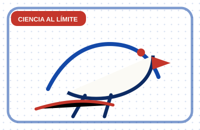

La carta completa
12 raciones por página

Ciencia al límite
El escorpión gigante que dominaba tierra y agua
Praearcturus gigas medía más de un metro y pudo ser uno de los primeros grandes depredadores de la tierra firme hace 415 millones de años.

Ciencia al límite
Un gusano que vive dentro de un castillo de cristal
Un gusano simbiótico fue descrito viviendo dentro de una esponja de vidrio con esqueleto de sílice cristalina.

Ciencia al límite
Los suimangas sí beben néctar con pajita
A diferencia de los colibríes, los suimangas crean un sello con la lengua y el pico para succionar néctar como diminutos fontaneros florales.

Ciencia al límite
Una superfamilia nueva en el fondo del Pacífico
En la zona Clarion-Clipperton se describieron 24 especies nuevas de anfípodos y una superfamilia nueva.

Ciencia al límite
El dinosaurio con pinchos soldados al hueso
Spicomellus afer, el anquilosaurio más antiguo conocido, tenía espinas óseas fusionadas a huesos como las costillas y un collar de púas descomunal.

Ciencia al límite
La posible estrella agujero negro del universo temprano
El James Webb ayudó a identificar un objeto rojo que podría ser un agujero negro envuelto en una nube estelar de hidrógeno.

Ciencia al límite
El número 137 que obsesionó a Pauli
La constante de estructura fina parece un número sencillo, pero conecta la luz, los electrones y uno de los grandes misterios de la física.

Antropología desquiciante
Los monos capuchinos que secuestran bebés aulladores
En una isla de Panamá, jóvenes capuchinos macho aprendieron a cargar crías de mono aullador durante días, sin beneficio aparente.

Ciencia al límite
Agujeros negros que podrían fabricar planetas gigantes
Un modelo sugiere que los bordes de discos de acreción en núcleos galácticos activos podrían formar millones de planetas.

Ciencia al límite
El ictiosaurio que nadaba en modo sigilo
Un fósil de Temnodontosaurus conserva tejidos blandos de una aleta con punta flexible y borde serrado para moverse con menos ruido.

Ciencia al límite
Un planeta con forma de limón alrededor de un púlsar
PSR J2322-2650b parece estirado por la gravedad de su púlsar y tendría una atmósfera exótica rica en helio y carbono.

Ciencia al límite
La ameba de fuego bate el termómetro de la vida compleja
Incendiamoeba cascadensis puede dividirse a 63 ºC, un récord para células eucariotas observado en aguas calientes de Lassen.
Reserva mesa fija
Cada mañana te mandamos la curiosidad del día por correo. Un email, un dato, cero relleno. Y los domingos, el enigma con la solución de la semana.